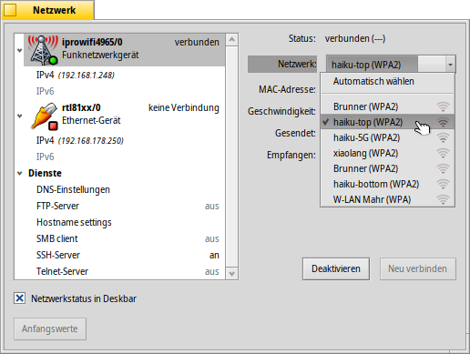
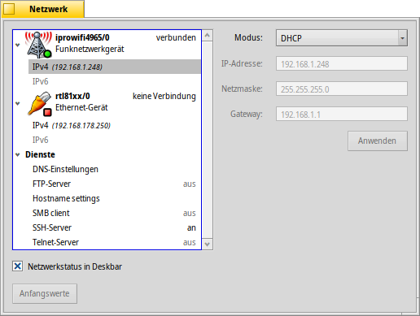
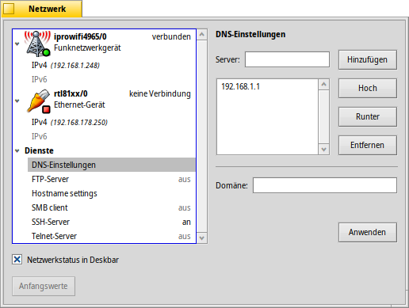
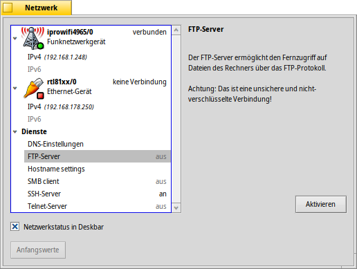

Deutsch
Deutsch Català
Català English
English Español
Español Français
Français Italiano
Italiano Magyar
Magyar Polski
Polski Português
Português Português (Brazil)
Português (Brazil) Română
Română Slovenčina
Slovenčina Suomi
Suomi Svenska
Svenska 中文 ［中文］
中文 ［中文］ Русский
Русский Українська
Українська 日本語
日本語 Netzwerk
Netzwerk
| Deskbar: | ||
| Ort: | /boot/system/preferences/Network | |
| Einstellungen: | /boot/system/settings/network/resolv.conf |
In den Netzwerk Einstellungen lassen sich alle verfügbaren Netzwerkgeräte und Dienste konfigurieren. Links im Fenster befinden sich einklappbare Listen aller Geräte und Dienste, rechts die dazugehörigen Informationen oder Einstellmöglichkeiten.
Ganz unten lässt sich eine Checkbox aktivieren, um den anzuzeigen. bringt die Einstellungen zurück, die beim Start des Panels aktiv waren.
Geräte
Hier sehen wir ein Wifi-Gerät, das den iprowifi4965 Treiber benutzt. Aus dem Menü lässt sich das WLAN auswählen mit verbunden werden soll. Hinter jedem WLAN Namen zeigt ein kleines Icon die jeweilige Signalstärke an.
Wird ein WLAN ausgewählt, versucht Haiku bei jedem Hochfahren automatisch mit diesem eine Verbindung aufzubauen. hingegen, verbindet mit dem WLAN mit der höchsten Signalstärke.
Verbindet man sich mit einem geschützten Funknetzwerk, wird nach dem Passwort gefragt und ob diese Verbindung nur einmalig oder immer genehmigt werden soll. Letzteres speichert das Passwort, um es in Zukunft nicht mehr eingeben zu müssen.
Mit den Buttons darunter lässt sich ein Gerät oder mit dem WLAN .
Unter jedem Gerät befindet sich eine Liste der verfügbaren Protokolle, IPv4 und IPv6:
Mit dem Menü ganz oben wird die Art der Zuweisung der benötigten Netzwerkparameter , and gewählt. Per wird die Konfiguration dynamisch aus dem Netzwerk (Router etc.) bezogen. Wählt man , muss man die nötigen Adressen selbst eingeben und abschließend .
Kabelgebundene Geräte haben die gleichen Einstellungen, bis auf das WLAN Menü natürlich.
Dienste
DNS-Einstellungen
Benutzt man DHCP wird die IP Adresse des DNS Servers und die Domäne automatisch aus dem Netzwerk (Router etc.) bezogen. Mit den Buttons auf der rechten Seite können weitere DNS Server hinzugefügt, entfernt und ihrer Priorität nach in der Liste sortiert werden. Klickt man werden die neuen Einstellungen aktiv.
FTP, SSH, Telnet
Haiku bietet einige Serverdienste, die nach Bedarf und werden können. Auf der rechten Seite finden sich Informationen zum jeweiligen Server, die man beachten sollte: Der FTP and der Telnet Server sind unsicher und unverschlüsselt. Deshalb sind sie standardmäßig deaktiviert und sollten nur eingeschaltet werden, wenn man sich der Sicherheitsrisiken bewusst ist.
Einstellungsdateien
Die Netzwerkeinstellungen finden sich im Ordner /system/settings/network/. Das ist im Normalfall eher uninteressant, außer man muss sie mal löschen, weil irgendetwas phantastisch schief gegangen ist und man nochmal ganz von vorn anfangen will...
Eine Datei ist allerdings recht nützlich, besonders wenn man in der Konsole arbeitet. In der hosts Datei lassen sich Namen an IP Adressen im Netzwerk zuweisen. Zum Beispiel:
127.0.0.1 localhost #loopback 192.168.178.3 NAS #Synology 192.168.178.102 XIOS #Mediaplayer
Neben dem Loopback zum Localhost habe ich die IP meines Synology Netzwerkspeichers unter "NAS" und meines Medienplayers under "XIOS" angelegt. Um eine FTP-Sitzung mit meinem Netzwerkspeicher zu starten, muss ich mich nicht an dessen IP Adresse erinnern, sondern gebe einfach ein:
ftp NAS